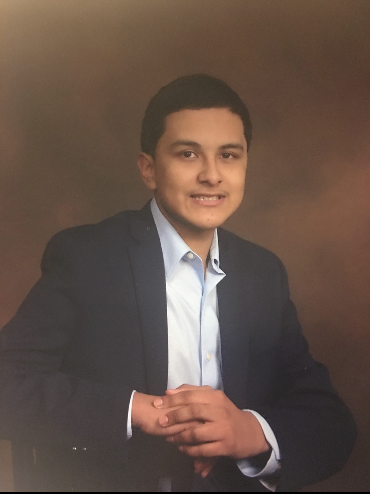

Michael Hernandez
Journalism Student

- MichaelEhernandez6@gmail.com
-
LinkedIn
-
Twitter
-
GitHub
Experience
For each job/internship/work experience, list job title on the first line, organization on the second line, the time span in years (i.e. 2011-2015 or 2015-present) on the third line, followed by a paragraph (1-3 sentences) describing your responsibilities/accomplishments
Co-Editor in Chief
La Voz Unida
January 2020- Present
My job consists of managing a team of writers, photographers, editors, and business staff. I co-lead weekly meetings where we discuss topic ideas and assign stories to writers. Throughout the writing process I assist the writers with any questions or concerns they may have. I also make sure deadlines are met and that articles have been edited for accuracy, grammar and style.
Editor in Chief
La Esquina Latina
May 2017-June 2018
I managed a team of writers and helped them produce news articles that were relevant to the Latino community at my high school. Every month I led a story session where writers pitched news ideas. I then chose the articles that would be in that cycle. I guided the writers in the right direction by hinting at potential sources and assisting them with any obstacles. During the final stage of the writing process I suggested several revisions to their articles. I also designed the pages in In InDesign and created a budget that outlined where each story would go.
Writer
La Esquina Latina
May 2016- May 2017
I wrote for the Spanish section of my high school’s award-winning newspaper. Throughout the year I wrote different types of articles that were relevant to the Latino community. I worked closely with my colleagues to produce quality journalistic content.
Law Intern
HMS Host
July 2016-August 2016
Over a period of two months I worked closely with the law department of this company. I helped the general counsel with active court cases and learned about different laws in the airport food service industry.
Education
B.A.,Broadcast Journalism, Minor in Spanish, University of Maryland, 2022
Skills
● Bilingual--Fluent in Spanish and English
● Video Editing in Premiere Pro
● Editor and Writer for a campus publication